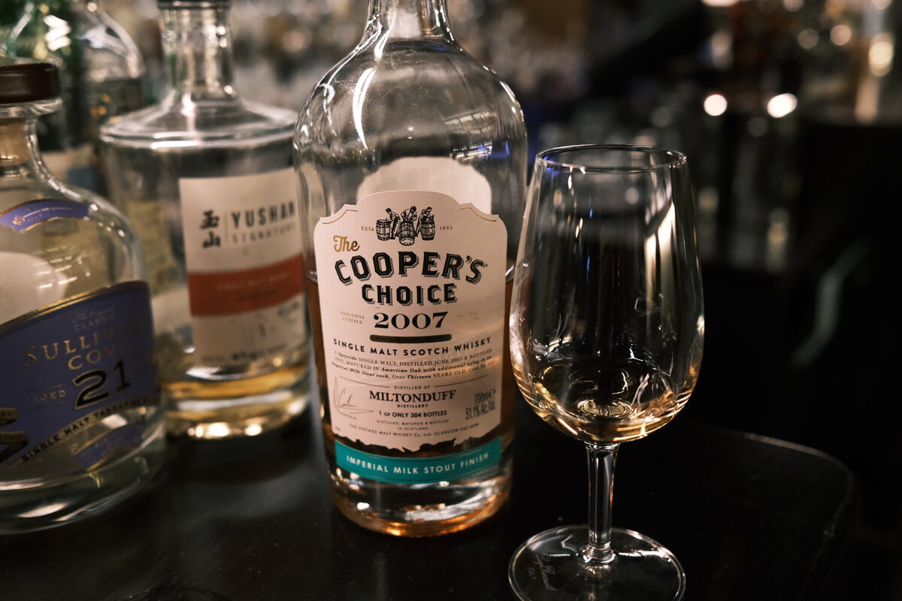

Miltonduff 2007 Cooper's Choice 13 years 51.1% (milk stout finish)
For the record, milk stouts suck.
Colour Light rose gold.
Nose Butter bomb. A little floral, grassy. Light toffee, quite malty. Overripe cherries and coconut… Cherry Ripe? A bit of textured milk… babycino? With water, grassier.
Palate Malty, caramel and toffee, brown sugar syrup… not overly sweet though. Dark chocolate and a bit of coffee. Is this the stout? A whack of flowers and grass. Milky texture. With water, astringency.
Finish A little astringent, woody, grassy. Malt and a touch of coffee and dark chocolate. Not much though. Mostly grain sweetness persists. Long.
Comments Buttery and grassy, mostly. Perhaps the stout lends a bit of chocolate. Does not swim all that well. Astringent notes do not sit well. Nice distillate though under all that. 83/100.

Posted by Dominic on 14 Jun 2021